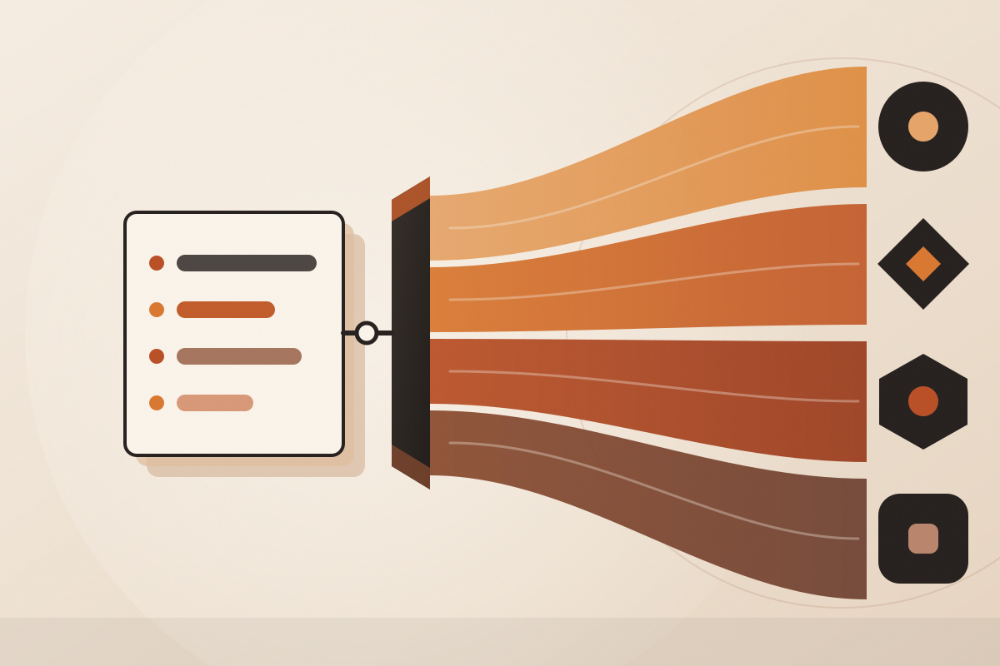

01 Adopt
Types-only codegen; the runtime is ~7 kB of wrapper. The error channel is a discriminated union, so TypeScript narrows ProblemDetails for free [19]. Cheapest exit of the four.
Bench test of every OpenAPI → TypeScript client generator worth naming in 2026, scored against one target: a typed TanStack Query client over a .NET 10 backend that answers errors in ProblemDetails.

It is the only option where useQuery().error is already your ProblemDetails union with no wiring, where query keys are DataTag-branded so setQueryData is typed for optimistic updates [21], and where nothing but a .d.ts file lands in the diff [18].
Types-only codegen; the runtime is ~7 kB of wrapper. The error channel is a discriminated union, so TypeScript narrows ProblemDetails for free [19]. Cheapest exit of the four.
ASP.NET Core's default JsonNumberHandling.AllowReadingFromString makes the schema honest about what it will accept — so an int is emitted as a type array with a regex pattern [2]. Every TypeScript generator faithfully reproduces the union, and your whole model tree rots.
"type": ["integer", "string"], "pattern": "^-?(?:0|[1-9]\d*)$" // fix it at the source builder.Services.ConfigureHttpJsonOptions(o => o.SerializerOptions.NumberHandling = JsonNumberHandling.Strict);
The generated schema carries only the five RFC 7807 fields and no additionalProperties. The ASP.NET team closed the report as answered rather than fixing it [3]. So problem.Extensions["traceId"] will never appear in any generated type — no matter which tool you choose.
Workaround: add an IOpenApiSchemaTransformer that widens the schema, or declare a custom error type and ProducesProblem<MyProblem>.
And regardless of tool: declare your 4xx/5xx responses on every endpoint [1]. An undeclared error response means every generator here falls back to Error or unknown.
There's nothing wrong with calling useQuery in your component directly. Separating QueryKey from QueryFunction was a mistake.TkDodo · TanStack Query maintainer [4]
const { data } = useGetPetById(petId); // prefetch in a router loader? // suspend? rebuild the // options by hand.
const { data } = useQuery( getPetByIdOptions({ path: { petId } })); queryClient.prefetchQuery( getPetByIdOptions({ path: { petId } })); // same object. works.
const { data } = useQuery( $api.queryOptions( 'get', '/pets/{petId}', { params: { path: { petId } } }));
Orval does emit getXQueryOptions() functions — but they are hand-typed UseQueryOptions literals rather than calls to TanStack's helper [5], which is why its generated suspense options don't typecheck. The issue is open and unassigned [7]. Adopting Orval today means adopting the pattern TanStack is drifting away from, and betting that Orval catches up.
It throws the raw body, not an Error instance [21]. error.detail works; error.message does not. A network failure still surfaces as a TypeError the types don't predict — narrow before you trust it.
It used to stringify the error body into Error.message under throwOnError, throwing the typing away at runtime. Reported and fixed [15] — but worth a smoke test on your own spec.
Kiota gives you client.posts.byPostId(id).get() behind a request adapter and an auth provider [24]. There is no TanStack integration — you would hand-write a queryOptions wrapper and a query key for every endpoint. Which is precisely the work you are trying to generate away.
Your Nx CI job has to fetch a binary, run Docker, or install the .NET SDK [25]. A second toolchain in a Node pipeline, for a client 48k people a week download against openapi-fetch's ~6M.
A cacheable generate-api target with the OpenAPI document as its only input and the generated directory as its output. Cache hits are free; the spec changing is the only thing that reruns it.
Commit the generated code. The diff is your review surface for backend changes, editors resolve types with no build step, and CI just verifies. Guard drift two ways:
# plain bunx orval && git diff --exit-code # or Nx's first-class equivalent — # register codegen as a sync generator nx sync:check
Nx fails the build when the client is stale [27]. This is where types-only quietly wins: a backend change produces a diff a reviewer can read, instead of a few thousand lines of regenerated hooks.
openapi-react-query — the key is ['get', '/pets/{petId}', init], branded DataTag<key, data, error> [21]. setQueryData infers data and error with no generics. Invalidating by path prefix is a plain array prefix.
Hey API — generates xQueryKey() plus setQueryData/getQueryData helpers. The key is a bespoke object, so prefix invalidation runs through its tags mechanism rather than the array-prefix idiom you already know.
Orval — gives you getXQueryKey() and the raw fetcher. setQueryData typing is yours to write.
For itenium-ui: openapi-typescript + openapi-fetch + openapi-react-query, with JsonNumberHandling.Strict and ProducesProblem<T> on every endpoint on the .NET side. You get the composable-queryOptions shape TanStack is converging on, a ProblemDetails union on error that needs zero wiring, typed optimistic updates via DataTag, and a one-file diff per backend change.
…you want generated Zod validators at the boundary, you want MSW-style mocks without adopting Orval, or you want the same client consumed from something other than React. It costs you a larger generated tree and a bespoke query-key shape. It costs you nothing on error typing.
…generated MSW + Faker mocks are the requirement that outranks everything else. Accept that you are adopting the one-hook-per-endpoint model TanStack's own maintainer has moved on from, with suspense support that doesn't currently typecheck [7].